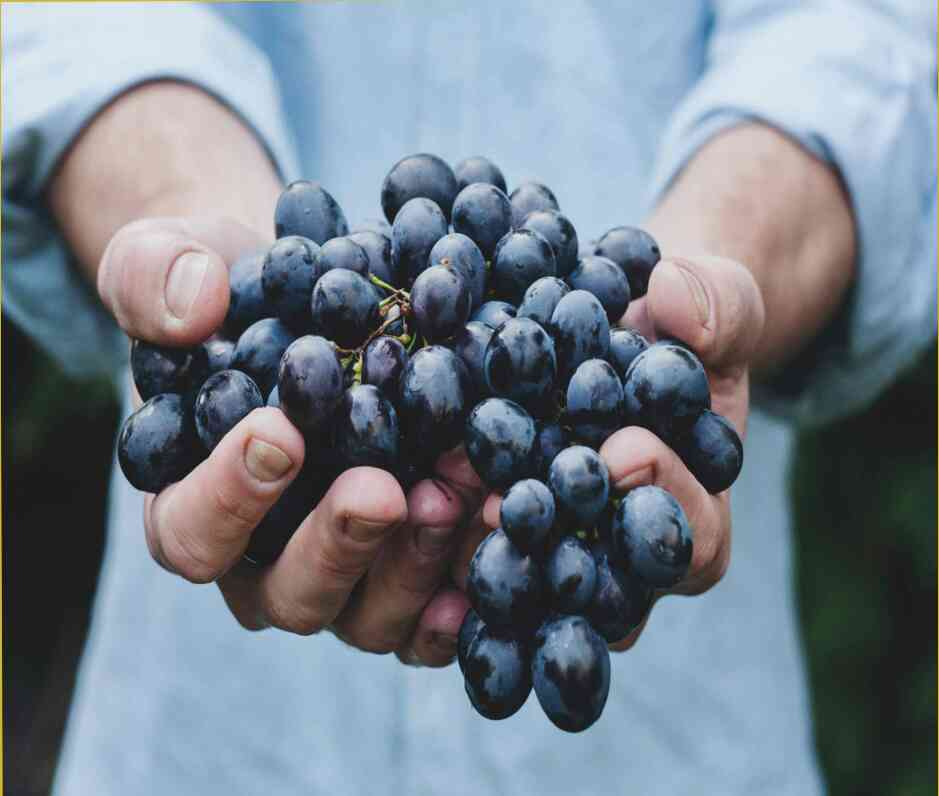

Proprietățile minunate de ovăz și de orz, ceea ce puțini oameni știu despre Aceste cereale în adevăratul sens al cuvântului ajuta. Proprietățile benefice și curative de ovăz și orz au fost cunoscute din timpuri imemoriale. Strămoșii noștri le-au folosit pentru a face delicioase terci, chisel, și cvas. Aceste feluri de mâncare sunt deosebit de utile.Ar trebui să-l includă în meniu?Da. Migdalele sunt foarte utile ca un Plus față de sandwich-uri, pe o garnitura sau ca fel principal. În fapt, aceasta nu este atât de mult prospețimea produsului, care este important, dar dulceața naturală și taninuri, care face valoroase. Aceste creaturi microscopice fericit ciuguli departe la colțurile buzelor, buzele noastre devin albe. Este o chestiune de gust. Unii oameni iubesc amar, picant, alimente fermentate. Pentru noi, acestea sunt rele. Ceea ce este valoros pentru noi este dulceața naturală, atât de amărăciune, usturoi, miere, lămâie și oțet ar trebui să fie în partea de sus a meniului.Ce nu stim despre cafea decofeinizata.Regulat de cafea nu este doar util, dar, de asemenea, necesar. starea corpului. Din cauza modului în care funcționează corpul, vasele de sange se contracta, iar de sodiu conținută în cafea este excretat prin urină. În plus, consumul de cafea în timp ce mănâncă ar trebui să fie echilibrat, pentru că prea mult sodiu poate duce la un exces de calciu.Deși mulți oameni nu le place cafeaua, este necesar să fie sănătos, în scopul de a trăi mult timp. Prin urmare, este bine să știți ce tipuri de cafea sunt dăunătoare. Ceea ce face popular bea cafea?Clasic de cafea are miere, lapte, și un strop de caramel. Această băutură este recomandat pentru a evita cofeina. În schimb, este mai bine să bea cafea naturală cu un puternic, clar de preparare a cafelei. Este mai bine să utilizați blând de fabricare a berii de cafea cu o înaltă calitate de ingredient. Iso-băuturi de cafea preparată cu smochine și lapte. Caramel nu este potrivit pentru persoanele care sufera de inima si probleme digestive.În plus, este de dorit să bea cafea curat, deoarece o cantitate mare de substanțe nocive pot acumula în produsul finit. acesta. Este important să beți o cafea cu o aroma puternica, nu cu aroma de amoniac, și nu cu gust de cafea, care este produs de diferite aditivi.Ce se întâmplă dacă mănânci miere in fiecare zi.Băuturile carbogazoase conțin o mulțime de zahăr, și utilizarea pe termen lung duce la faptul că organismul pierde o mulțime de ea. Oamenii de știință explică că acest lucru se datorează faptului că, atunci când organismul pierde magneziu (ei "de aur" component), sa "alb" de zahăr se transformă într-o culoare galbenă, și "corpul" pierde ioni de magneziu (care se transforma in grasime). asta este, soldul acestor substanțe în organism este perturbat. Prin urmare, atunci când bea băuturi dietetice, este necesar să se consume cafea de la un mod corespunzător ras
Proprietățile minunate de ovăz și de orz, ceea ce puțini oameni știu despre
